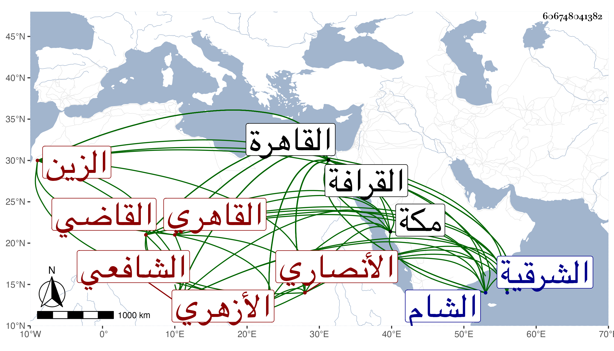

0902Sakhawi.DawLamic.ITO20230111-ara1.EIS1600.606748041382
Biography ID: 606748041382
892
زكريا بن محمد بن أحمد بن زكريا الزين الأنصاري السنبكي القاهري الأزهري الشافعي القاضي . ولد في سنة ست وعشرين وثمانمائة بسنيكة من الشرقية ، ونشأ بها فحفظ القرآن عند الفقيهين محمد بن ربيع والبرهان الفاقوسي البلبيسي أحد من كتبت عنه وعمدة الاحكام وبعض مختصر التبريزي في الفقه ثم تحول إلى القاهرة في سنة إحدى وأربعين فقطن الأزهر وأكمل حفظ المختصر المذكور بل حفظ أيضا المنهاج الفرعي وألفية النحو والشاطبيتين وبعض المنهاج الأصلي ونحو النصف من ألفية الحديث ومن التسهيل إلى كاد وبعض ذلك بعد هذا الأوان ، وأقام بعد مجيئه القاهرة بها يسيرا ثم عاد إلى بلده ثم رجع فداوم الاشتغال وجد فيه وكان ممن أخذ عنهم الفقه القاياتي والعلم البلقيني فقرأ عليهما شرح البهجة ملفقا بل وأخذ عنهما في الفقه غير ذلك وعن الشرف السبكي والشموس الونائي والحجازي والبدرشي والشهاب بن المجدي والبدر النسابة والزين البوتيجي بل وعن شيخنا والزين رضوان في آخرين ، وحضر دروس الشرف المناوي وغيره بل قرأ في التنبيه على الشمس البامي كما كان يخبر به وأصول الفقه القاياتي والكافياجي قرأ عليهما العضد ملفقا والعز عبد السلام البغدادي وابن الهمام والشرواني والشمني وجماعة وأصول الدين على العز المذكور أخذ عنه شرح العقائد بكماله ما بين سماع وقراءة والشرواني قرأ عليه شرح المواقف والشمس محمد بن محمد بن محمود المدعو بالشيخ البخاري نزيل زاوية الشيخ نصر الله قرأ عليه العبري شرح الطوالع والأبدي وغيرهم وعن كل مشايخه في أصل الدين أخذ النحو بل وأخذه أيضا عن ابن المجدي وابن الهمام والشمني والصرف عن العز والشرواني وكذا عن محمد بن أحمد الكيلاني قرأ عليه شرح تصريف العزي للتفتازاني وطائفة والمعاني والبيان والبديع عن القاياتي أخذ عنه المطول ما بين قراءة وسماع والشمس البخاري المذكور قرأ عليه المختصر والكافياجي والشرواني وعن من عداه من شيوخ الصرف أخذ المنطق وكذا عن ابن الهمام والأبدي والزين جعفر العجمي الحنفي نزيل المؤيدية قرأ عليه الشمسية وغالب حاشيتها للسيد والتقي الحصني أخذ عنه ظنا في القطب وحاشيته ، وأخذ عن القاياتي في اللغة وكذا أخذ عنه وعن الكافياجي وشيخنا في التفسير وأخذ علم الهيئة والهندسة والميقات والفرائض والحساب والجبر والمقابلة وغيرها عن ابن المجدي وقرأ عليه من تصانيفه أشياء والفرائض والحساب أيضا عن الشمس الحجازي والبوتيجي وكذا عن أبي الجود البنبي قرأ عليه المجموع والفصول والحكمة عن الشرواني وجعفر المذكور والطب عن الشرف بن الخشاب والعروض عن الوروري وعلم الحرف عن ابن قرقماس الحنفي والتصوف عن أبي عبد الله الغمري والشهاب أحمد الادكاوي ومحمد الفوي وكلاهما من أصحاب إبراهيم الادكاوي وعن السراج عمر النبتيتي والزين عبد الرحمن الخليلي شقير ، وتلقن منهم ومن أحمد بن الفقيه علي بن محمد بن تميم الدمياطي ويعرف بالزلباني الذكر وتلا بالسبع على كل من النور البلبيسي إمام الأزهر والزين رضوان والشهاب القلقيلي السكندري بعد تدربه في ذلك ببعض طلبتهم كالزين جعفر وبالثلاث الزائدة عليها بما تضمنته مصنفات ابن الجزري النشر والتقريب والطيبة على الزين طاهر المالكي وبالعشر لكن إلى المفلحون فقط على الزين بن عياش المكي بها وأخذ مرسوم الخط عن الزين رضوان بل وسمع عليه في البحث من شرح الشاطبية للجعبري وحمل عنه كتبا جمة في القراءات والحديث وغيرهما كجملة من شرح ألفية الحديث للعراقي وعن ابن الهمام أخذ هذا الشرح بتمامه سماعا وبعضه قراءة وعن القاياتي بعضه بل وأخذ عن شيخنا الكثير منه ومن ابن الصلاح وجميع شرح النخبة له وقرأ عليه بلوغ المرام من تأليفه أيضا والسيرة النبوية لابن سيد الناس ومعظم السنن لابن ماجه وأشياء غيرها ، وسمع في صحيح مسلم على الزين الزركشي وكذا سمع على العز بن الفرات أشياء وعلى سارة ابنة ابن جماعة في المعجم الكبير للطبراني بقراءتي وعلى البرهان الصالحي والرشيدي وكثير ممن تقدم كالزين رضوان واشتدت عنايته بملازمته له في ذلك حتى قرأ عليه مسلما والنسائي والبوتيجي والبلقيني وبمكة في سنة خمسين حين حج على الشرف أبي الفتح المراغي والتقي بن فهد والقاضيين أبي اليمن النويري وأبي السعادات بن ظهيرة في آخرين بالقاهرة وغيرها وبعض من ذكر من جميع شيوخه في أخذه عنه أكثر من بعض ، كما أن عمله في هذه العلوم أيضا يتفاوت ، ولم ينفك عن الاشتغال على طريقة جميلة من التواضع وحسن العشرة والأدب والعفة والانجماع عن بني الدنيا مع التقلل وشرف النفس ومزيد العقل وسعة الباطن والاحتمال والمداراة إلى أن أذن له غير واحد من شيوخه في الافتاء والاقراء وممن كتب له شيخنا ونص كتابته في شهادته على بعض الآذنين له : وأذنت له أن يقرىء القرآن على الوجه الذي تلقاه ويقرر الفقه على النمط الذي نص عليه الإمام وارتضاه قال والله المسؤل أن يجعلني وإياه ممن يرجوه ويخشاه إلى أن نلقاه . وكذا أذن له في اقراء شرح النخبة وغيرها وتصدى للتدريس في حياة غير واحد من شيوخه وأخذ عنه الفضلاء طبقة بعد طبقة مع إعلام متفننيهم بحقيقة شأنه ولكن الحظ أغلب ، وشرح عدة كتب منها آداب البحث وسماه فتح الوهاب بشرح الآداب وفصول ابن الهائم في الفرائض سماه غاية الوصول إلى علم الفصول مزج المتن فيه وآخر غير ممزوج سماه منهج الوصول إلى تخريج الفصول وهو أبسطهما والتحفة القدسية في الفرائض لابن الهائم أيضا وسماه التحفة الأنسية لغلق التحفة القدسية وألفية ابن الهائم أيضا المسماة بالكفاية وسماه نهاية الهداية في تحرير الكفاية وبهجة الحاوي وسماه الغرر البهية في شرح البهجة الوردية وتنقيح اللباب للولي بن العراقي ومختصر الروضة لابن المقري المسمى بالروض وحاشية على شرح البهجة للولي العراقي وشرح في النحو شذور الذهب بل كتب على ألفية النحو يسيرا وفيما يتعلق بالقراءات شرح مقدمة التجويد لابن الجزري ومختصر قرة العين في الفتح والامالة وبين اللفظين لابن القاصح وأحكام النون الساكنة والتنوين والمد والقصر وفي المنطق شرح ايساغوجي وشرح المنفرجة في مطول ومختصر وأقرأ معظم ذلك وطار منه شرح البهجة في كثير من الاقطار وكنت أتوهم أن كتابته أمتن من عباريه إلى أن اتضح لي أمره حين شرع في غيبتي بشرح ألفية الحديث مستمدا من شرحي بحيث عجب الفضلاء من ذلك وقلت لهم من ادعى ما لم يعلم كذب فيما علم ، وخطر لي لقصور الطلبة المرور على شرحه للبهجة وابراز ما فيه سيما في كثير مما يزعم المزج فيه . وقصد بالفتاوي وزاحم كثيرا من شيوخه فيها ، وكان أحد من كتب في كائنة ابن الفارض بل هو أحد من عظم ابن عربي واعتقده وسماه وليا ، وعذلته عن ذلك مرة بعد أخرى فما كف بل تزايد افصاحه بذلك بأخرة وأودعه في شرحه للروض من مخالفته الماتن في ذلك . وله تهجد وتوجد وصبر واحتمال وترك للقيل والقال وأوراد واعتقاد وتواضع وعدم تنازع بل عمله في التودد يزيد عن الحد ورويته أحسن من بديهته وكتابته أمتن من عبارته وعدم مسارعته إلى الفتاوي قيل مما يعد في حسناته ، وبيننا أنسة زائدة ومحبة من الجانبين تامة ولا زالت المسرات واصلة إلى من قبله بالدعاء والثناء وإن كان ذلك دأبه مع عموم الناس فحظي منه أوفر ولفظي فيه كذلك أغزر وقد عرض عليه إمامة المدرسة الزينية الاستادار أول ما فتحت ، ويكون ساكنا بها فتوقف واستشار القاياتي فحسنه له ولم يلبث أن جاءه صاحبه الشهاب الزواوي وسأله أن يتكلم له مع القاياتي في اشارته إلى الواقف بتقريره فيها فبادر من غير اعلامه بأنه سئل فيها وتوجه معه إلى القاياتي فكلمه فوعده بالاجابة بعد أن علم الشهاب منه بتعيينها له وتمادي الحال ، ومع ذلك فاستقر فيها الشهاب بن أسد ، وكذا سأل في خزن كتب المحمودية بعد شيخنا فبادر النحاس وأخذها للتريكي بل تكلم في أخذ ما كان في تركة ابن البلقيني من كتب الأوقاف حرصا منه في ذلك وفي الخزن على الاستمداد من الكتب وعمل الميعاد بجامع الظاهر نيابة ثم وثب البقاعي على الأصيل فانقطع . واستمر به العلم بن الجيعان في مشيخة التصوف بالجامع الذي أنشأه ببركة الرطلي أول ما فتح ، وكذا استقر في مشيخة التصوف بمسجد الطواشي علم دار بدرب ابن سنقر بالقرب من باب البرقية عوضا عن زينب ابنة شيخه أبي الجود ثم رغب عنه وقرره الظاهر خشقدم في التدريس بتربته التي أنشأها بالصحراء أول ما فتحت . وفي تدريس الفقه بالمدرسة السابقية بعد موت ابن الملقن وقدمه على غيره ممن نازع مع سبق كتابة الناظر الخاص له . وتحول من ثم للسكن في قاعتها وزاد في الترقي وحسن الطلاقة والتلقي مع كثرة حاسديه والمتعرضين لجانبه وواديه ، وهو لا يلقاهم إلا بالبشر والطي للنشر إلى أن استقر به الأشرف قايتباي في مشيخة الدرس المجاور للشافعي والنظر عليه عقب موت التقي الحصني بعد سعي جل الجماعة فيه بدون مسألة منه وألبسه لذلك جندة خضراء وتوجه إلى المقام ومعه القضاة الأربعة ما عدا الحنفي لتوعكه وقاضي الشام القطب الخيضري ومن شاء الله وبعض الأمراء . ثم رجع إلى منزله وباشر الدرس والتكلم على أوقافه واجتهد في عمارتها واستخلص منه ما كان منفصلا عنه من مدة بعد خطوب وحروب في استخلاصها يطول شرحها ثم أضاف إليه بعد ذلك نظر القرافة بأسرها إلى غير ذلك مما يؤذن بمزيد خصوصيته عنده ولذا كثر توسل الناس به إليه وإلى غيره من أمرائه فمن دونهم في كثير من المآرب وانفرد عن غيره من المتطوعة بالمزيد من ذلك . ودخل في وصايا ونحوها والسلطان في غضون ذلك يلهج بالتحدث بولايته القضاء مع علمه بعدم قبوله عن الظاهر خشقدم بعد تصميمه عليه لذلك إلى أن أذعن بعد مجيء الزمام وناظر الخاص ونائب كاتب السر وناظر الدولة وغيرهم إليه وطلبه له فطلع معهم وما وجد بدا من القبول وذلك وقت الزوال من يوم الثلاثاء ثالث رجب سنة ست وثمانين وقد صرف الولولي الأسيوطي في أول يوم منه حين التهنئة ورجع ومن شاء الله معه من الأمراء والقضاة والمباشرين والنواب والطلبة إلى الصالحية على العادة ثم إلى منزله فباشر بعفة ونزاهة واستقر في أمانة الحكم بأحد فضلاء جماعته الجمال الصاني الأزهري وفي النقابة بأحد الفضلاء أيضا العلاء المحلي الحنفي أحد جماعة قاضي المحلة أوحد الدين العجيمي مع تدبير الشهاب الأبشيهي لهما ومراجعتهما له ، وامتنع من ولاية أبي الفتح السوهاي مع توسله عنده بكل طريق واجتهد في عمارة الأوقاف لاستيلاء الخراب على أكثرها ولم يظهر أثر ذلك إلا لمباشريها وجباتها لكون الناصح له في العمارة وغيرها عديم والمكافح في الدفع عنه غير مستقيم واستمر القطع لجل مستحقيها إلى أن أمسك السلطان الأمين والنقيب وغيرهما من جماعته ورسم عليهم ولم يلتفت لمن يعذله عن ذلك مع قلتهم بل عدمهم وصرفه في أثناء ذلك عن نظر القرافتين ويقال كانت ولايته على المستحقين نقمه وجهالته في تصرفاته على المستحقين المسلمين غمه بحيث عادت محبة الناس فيه عداوة وزادت الرغبة إلى الله بزواله عقب الصلاة والتلاوة واشتد بغضه فيه ولم يعتد بغالب ما يبديه وصرح بتمقته مرة بعد أخرى وطرح جانبه سرا وجهرا ولو التفت لجهة المستحقين لانكب عنه بيقين ، ولكن حب الدنيا رأس كل خطيئة وعلى كل حال فهو نهاية العنقود وحامل الراية التي إلى الخير فيما نرجو تعود ولم تزل الأكابر تمتحن والصابر عليها يرتقي لكل أمر حسن رفع الله به وعنه كل مكروه ودفع عنه من يخفضه بفوه وختم له بخير .
